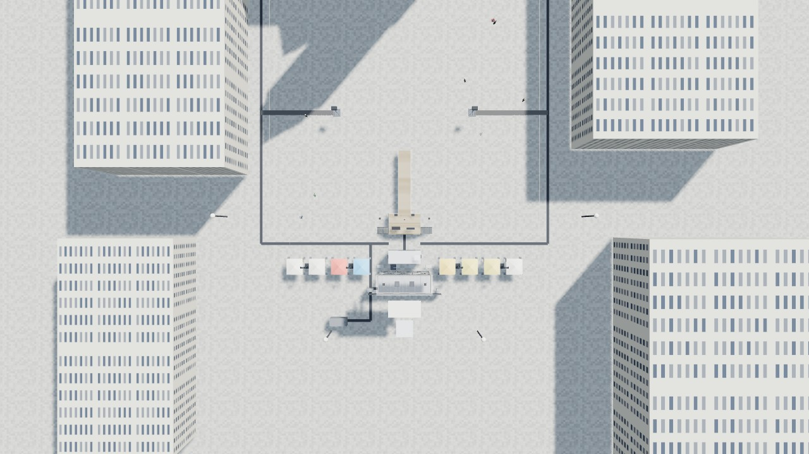
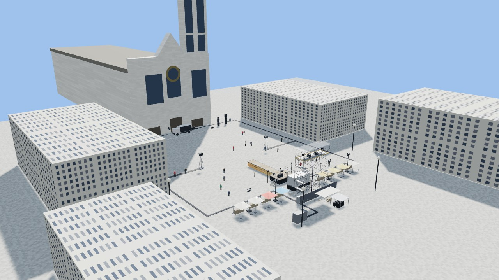

Fiche de déclaration — rassemblement et soirée sur le parvis
Résumé pour la mairie, la préfecture et les services (à compléter puis joindre le dossier technique)
[Organisateur — à compléter] · version v5 du 2 novembre 2026 · 2026-11-02 · [contact — à compléter]
1. Identification et nature de l'événement
Rubrique
Réponse
Intitulé
[à compléter] — soirée sur le parvis de la basilique Saint-Denis : rassemblement des collectifs, scène ouverte, défilé, concerts, mapping vidéo sur la façade
Organisateur
[structure, SIRET, adresse — à compléter]
Responsable sur place
[nom, téléphone joignable toute la soirée — à compléter]
Lieu
parvis de la basilique Saint-Denis (93200), façade occidentale ; espace public, domaine de la Ville ; monument : Centre des monuments nationaux
Date
[date — à compléter] ; montage dès [heure], public de 18 h à 0 h 40, parvis rendu avant 2 h
Nature
manifestation sur la voie publique avec sonorisation, podium, projection sur monument, lasers ; sans billetterie, sans barrières, accès libre
Jauge
5 424 personnes à 2 pers/m² sur 2 712 m² nets (maximum 8 136 à 3 pers/m²) — jauge retenue avec la Ville : [à compléter]
Déclarations liées
déclaration de manifestation (préfecture), autorisation d'occupation du domaine public (Ville), accord CMN / DRAC (projection), déclaration DGAC (lasers), arrêté d'extinction de l'éclairage public 22 h → 23 h 20, dérogation horaires sonorisation
Dispositif en quelques lignes
Implantation : tout au centre du parvis, dans l'axe — camion-écran devant la façade, zone public 52 × 54 m, podium-catwalk de 1,50 m qui entre dans le public, régie et tour vidéo (plancher à 10,3 m) à 64–72 m, village de 8 tonnelles sur les flancs, repos et électricité derrière. Voir le plan joint.
Sécurité : zone sans barrières tenue par [n] agents et un marquage au sol, poste de secours et prévention dans le village, [n] secouristes / SSIAP], couloirs latéraux de 4 m libres pour les secours, tours de délai en îlots.
Son : 4 piles de 4 subs + têtes + 2 délais ; 102 dB(A) et 118 dB(C) sur 15 min, afficheur et enregistrement en régie ; sonorisation de 19 h 30 à [heure de fin].
Vidéo et lasers : 2 vidéoprojecteurs 40 000 lm et 2 lasers 10 W sur une tour d'échafaudage Layher à 70 m de la façade, faisceaux à plus de 9 m au-dessus du public, aucune fixation sur le monument, lasers sur la façade seule au-dessus de 5,5 m.
Électricité : 53,5 kW appelés, TGBT 125 A tri raccordé au coffret forain [à confirmer avec la Ville] ou groupe électrogène 100 kVA insonorisé.
Structures : tour Layher (note de calcul et PV de montage), podium praticables, tonnelles lestées, régie conteneur sur praticables, camion moteur coupé et calé.
Riverains : information préalable [date], horaires de l'arrêté, niveaux mesurés.
Pièces jointes
Dossier technique complet (implantation cotée, synoptiques, bilan électrique, inventaire).
Plan d'implantation générale et vues de la maquette.
Attestations à joindre : assurance RC organisateur [à joindre], note de calcul et PV de montage de la tour [monteur], calcul NOHD et certificat opérateur laser [prestataire], fiches techniques son [NoName Prestation], plan de prévention [à joindre].
2. Plan et vue d'ensemble
Le plan coté complet est dans le dossier technique (section Implantation).

Plan de dessus de jour, échelle : la zone public fait 52 × 54 m

Vue d'ensemble du parvis en fin de montage (16 h) : tour Layher, régie, podium-catwalk, camion devant la façade, stands sur les flancs
3. Jauges et puissance
Poste
Appelé
Départ TGBT
Où
Son
14 kW
63 A tri
coffrets son jardin et cour, pieds de façade
Lumière
4,5 kW
32 A tri
coffret lumière · stands, derrière la tour côté cour
Vidéo (VP, serveur, écran camion, lasers)
12,5 kW
32 A tri
régie, tour, camion
Captation
1,5 kW
16 A mono
régie
Régie (clim, éclairage, onduleur)
3 kW
16 A tri
régie
Stands (8 × 2 kW)
16 kW
63 A tri
coffret lumière · stands
Repos, stockage, balisage, secours
2 kW
16 A mono
derrière la tour
Total appelé
53,5 kW
TGBT 125 A tri (86 kVA)
derrière la tour côté jardin
Source : coffret forain de la Ville s'il délivre 125 A tri, sinon groupe électrogène 100 kVA insonorisé (80 kW, charge prévue 67 %, ≈ 16 L/h, 160 L pour la soirée + réserve), placé derrière les stands côté jardin, hors vue, avec une zone d'exclusion de 2 m.
Jauges (calcul de la démo, grille au mètre) :
Espace
Surface
Jauge
Zone public nette (52 × 54 m moins podium + marges et îlots de délai)
2 712 m²
5 424 à 2 pers/m² · 8 136 maxi à 3 pers/m² (ERP PA debout)
Flancs devant les stands (files, circulation)
161 m²
161 à 1 pers/m²
Plateau : tête 6 × 4 + catwalk 2,4 × 12
52,8 m²
35 en défilé (1,5 m²/pers), structure 500 kg/m²
Coulisses (entre podium et régie)
30 m²
30 artistes et régisseurs
Repos équipe
18 m²
9 assis
Hayon (plateau DJ)
3,5 m²
2 personnes (charge hayon ≈ 750 kg, à lire sur le véhicule)
La jauge de référence à déclarer est celle à 2 pers/m² ; la Ville et la préfecture peuvent imposer moins. Les couloirs latéraux (x = ±26 à ±30 m) restent libres sur 4 m pour les secours.
4. Dispositif de sécurité et de prévention
Public et circulation
zone public de 2 712 m² nets, sans barrières : marquage au sol, agents aux angles, tours de délai en îlots tenus ; jauge de référence 5 424 personnes à 2 pers/m², maximum réglementaire 8 136 à 3 pers/m² — la jauge déclarée est celle retenue avec la Ville ;
couloirs latéraux de 4 m libres de part et d'autre (voies pompiers), passages de câbles roulables, sorties vers le métro et le tram ;
plan de prévention préfecture, SSIAP et secouristes dimensionnés sur la jauge, poste de secours dans le village (côté jardin, visible dès l'axe), prévention et accueil à côté.
Podium-catwalk
1,50 m de haut, 500 kg/m², platelage antidérapant, jupe fermée, nez de scène éclairés ;
garde-corps 1,10 m au fond et sur les côtés de la tête ; catwalk sans garde-corps (face jouée) : largeur 2,40 m, agents aux angles, lisses basses amovibles possibles — point à valider en commission de sécurité ;
deux escaliers latéraux 1,20 m, marches 19 cm, mains courantes doubles, nez contrastés, éclairés ; un régisseur de plateau pendant le micro ouvert et le défilé ; jauge plateau 35 personnes en défilé ; accès PMR à trancher (plateforme élévatrice ou prise de parole au pied).
Camion et hayon
moteur coupé, calage, extincteur, zone technique avant de 1,7 m tenue par des agents ;
hayon déployé : charge lue sur la plaque du véhicule (≈ 750 kg) → 2 personnes maximum, béquilles, garde-corps amovible côté arrière ;
pas de DJ sur le hayon pendant le mapping (dans le cône du VP 1).
Tour et structures
tour Layher Allround montée par une entreprise qualifiée : note de calcul au vent, lestage (≈ 8 t à confirmer), PV de montage, contrôle avant mise en service, bâche de toit démontée au-delà de 50 km/h ; accès par planchers à trappe et échelles ;
tonnelles lestées 4 × 20 kg, toits démontés si vent fort ; régie surélevée sur praticables (charge au sol à vérifier).
Son, lumière, lasers, électricité
niveaux 102 dB(A) et 118 dB(C) sur 15 minutes (décret 2017-1244), afficheur et enregistrement en régie, information des riverains, horaires de l'arrêté ;
wash de façade et totems hors du cône des VP, aucun faisceau vers les fenêtres riveraines ;
lasers : classe et puissance déclarées, calcul NOHD du prestataire, zone d'exclusion sous 5,5 m sur la façade, déclaration DGAC, opérateur certifié sur la tour, arrêt d'urgence en régie ;
installation électrique temporaire : un point de terre, différentiels 30 mA par départ, arrêt d'urgence général en régie et au TGBT, vérification par organisme agréé si demandée ;
monument : accord écrit CMN / DRAC pour la projection, aucune fixation sur la basilique, emprise du chantier de la tour nord respectée.
Météo : seuils d'annulation ou de repli à fixer (vent : bâche de tour et toits de tonnelles ; pluie : régie étanche, machines sous toit bâché, lasers et VP protégés).